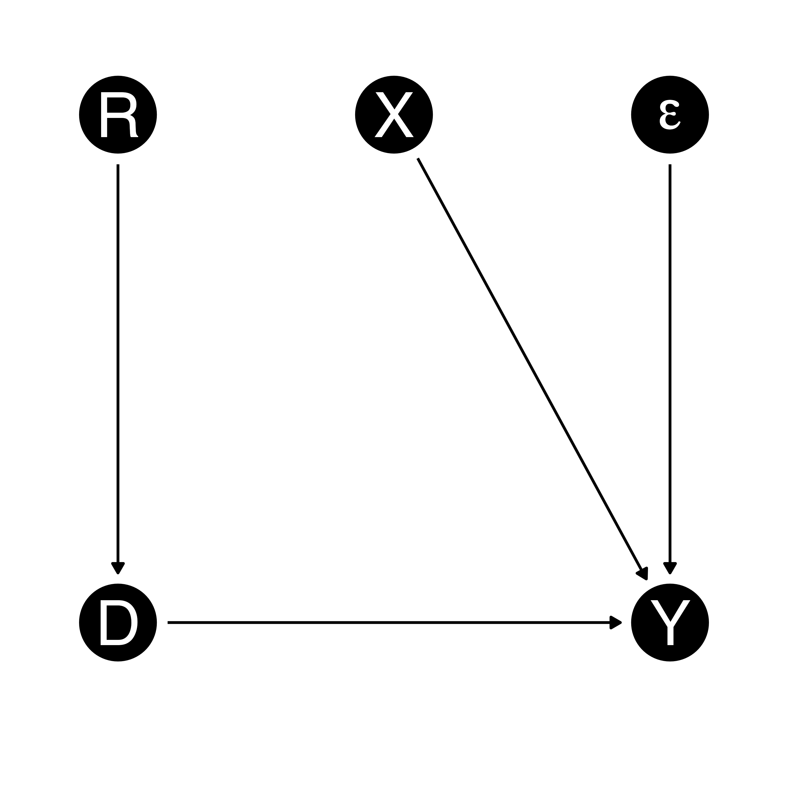
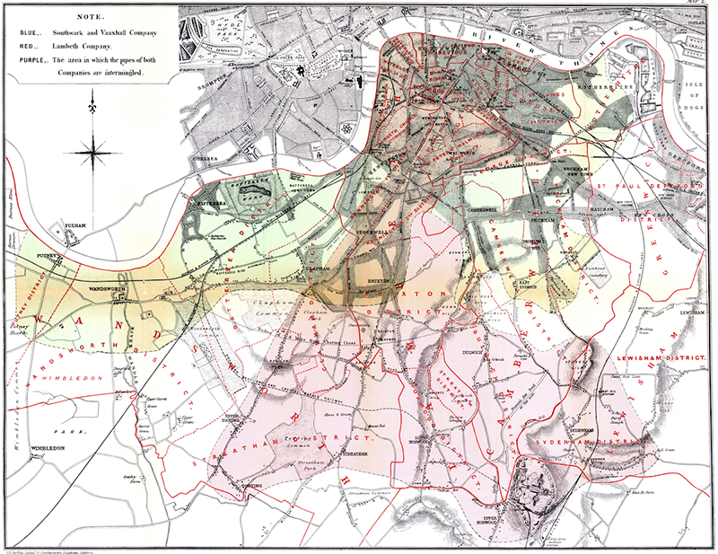
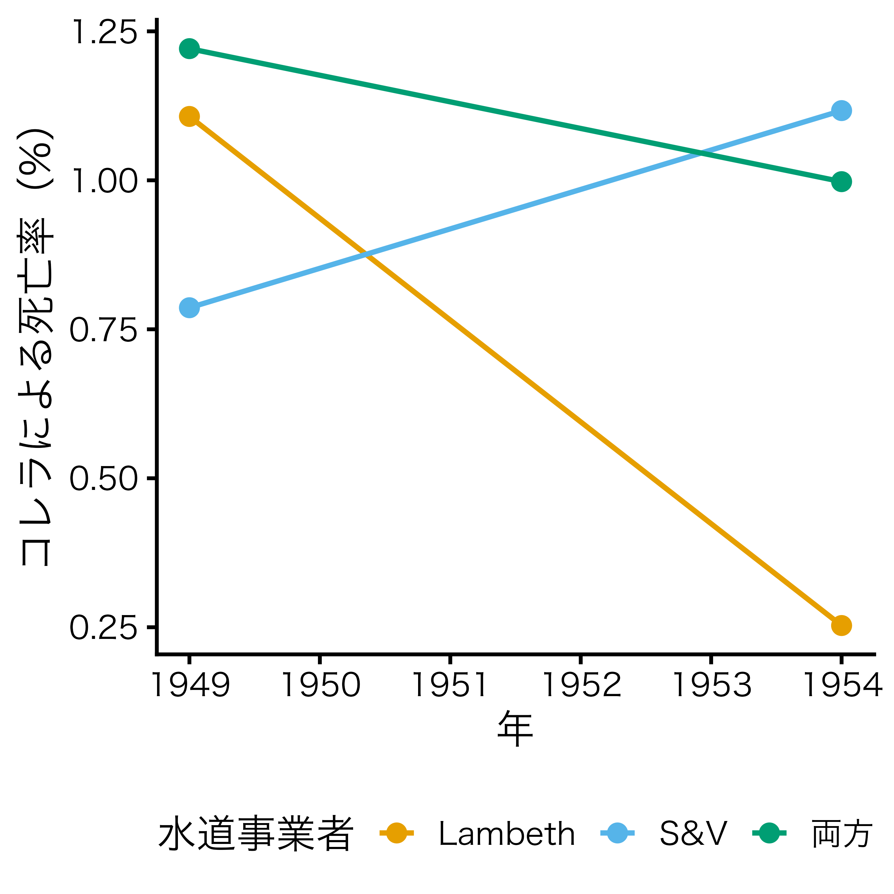
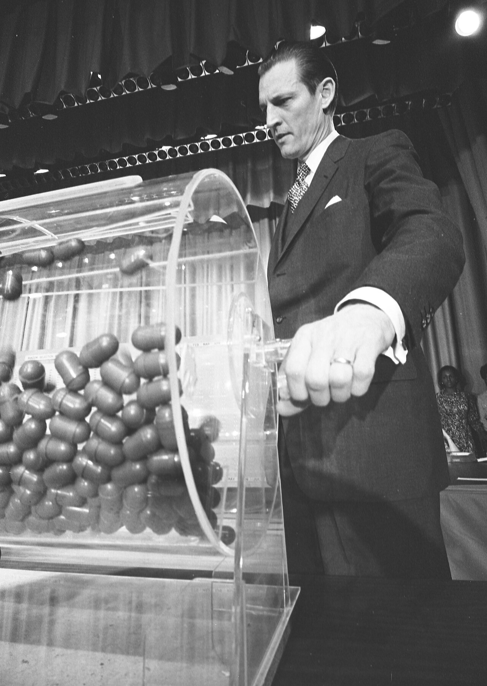
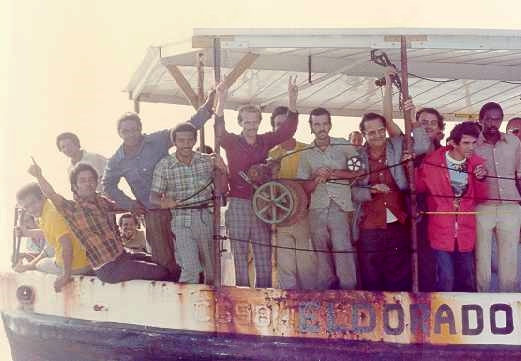
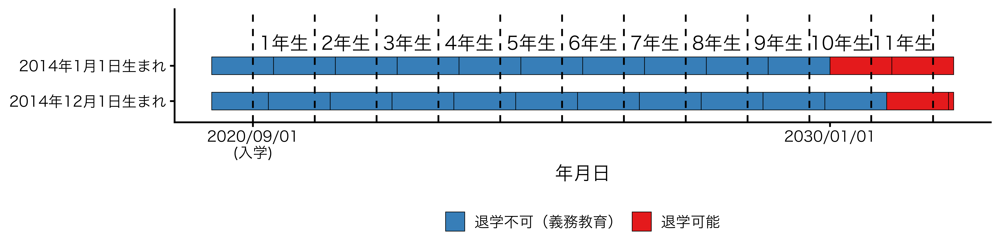

8/ 自然実験と自然実験（ドラフト）
今回の内容
「実際のデータでどうやって”ランダム化”に近い状況を見つけるか」
これから学ぶ手法（DID・RDD・IV・合成統制法）は、すべて自然実験の「発見」から始まる
しかし現実には…
共変量調整（回帰分析や傾向スコア法）は「観察可能な変数」を統制することで内生性に対処
しかし…
これまで学んだ/これから学ぶ手法は、すべてどうやって比較可能な集団を用意するかという一つの問いに対する、異なるアプローチ
| アプローチ | 比較可能性の作り方 | 代表的手法 |
|---|---|---|
| 人為的に作る | ランダム化によって処置群・統制群を無作為に分割 | RCT |
| 観察範囲内で揃える | 観察された共変量の値を揃える・統制 | 回帰分析、傾向スコア |
| 既に存在する状況を見つける | 外生的な出来事による as-if random な処置を利用 | 自然実験・準実験 |
研究者が意図的に処置を割り当てるのではなく、法律の変更・制度の違い・自然災害・偶然の出来事などによって、あたかもランダムに（as-if-random）割り当てられたかのような処置が生じている状況
I define a natural experiment as a research study where the treatment assignment mechanism (i) is neither designed nor implemented by the researcher, (ii) is unknown to the researcher, and (iii) is probabilistic by virtue of depending on an external factor. (Titiunik 2021)
社会や自然そのものがコインを投げてくれている状況

| 手法 | 内生性への対処 | 観察されない交絡因子 |
|---|---|---|
| RCT | 研究者が処置をランダムに割り当て | 均質 |
| 共変量調整 | 観察された共変量を統制 | 未観測の交絡は残る |
| 自然実験 | 社会に既に存在する外生的ショックを利用 | 処置がas-if randomなら平均的に均衡 |
| 手法 | 識別の根拠 |
|---|---|
| RCT | 研究者による無作為割り当てで独立性（交換可能性・無視可能性）が達成 |
| 共変量調整 | 「観察された変数を統制すれば処置群と統制群は比較可能」という仮定（条件付き独立） |
| 自然実験 | 「外生的な出来事による割り当ては、あたかもランダム（as-if random）である」という仮定 |
| 手法 | 実行可能性 | 長所 | 短所 |
|---|---|---|---|
| RCT | 低い （コスト・倫理・時間の制約） |
高い内的妥当性 | 実施できる場面が限られる |
| 共変量調整 | 高い （データがあればすぐ実行可） |
データの入手・実行が容易 | 未観測の交絡に脆弱 非常に強い仮定 |
| 自然実験 | 中程度 （適切な出来事を見つける必要） |
未観測交絡にも対応でき、実データで検証可能 | 都合の良い自然実験が常に存在するとは限らない 外的妥当性が限定的なことも1 |
| 発生源 | 例 |
|---|---|
| 制度・政策の変更 | 最低賃金改定、税制改革、法改正 |
| 地理的・行政的境界 | 県境、学区境界での制度の違い |
| くじ・抽選 | 徴兵くじ、学校選択の抽選 |
| 恣意性の低いルール | 誕生日、試験の閾値点 |
| 自然災害・突発的事象 | 地震、移民の急激な流入 |
| 制度導入のタイミングのズレ | 一部地域が先行して政策導入 |
同義に使われることも多いが、準実験 \(\in\) 自然実験1
| 分析手法 | 処置 | 準実験か | 自然実験か |
|---|---|---|---|
| 差分の差分法 | 政策 | \(\bigcirc\) | \(\times\) |
| 差分の差分法 | 災害 | \(\bigcirc\) | \(\bigcirc\) |
| 水道事業者 |
コレラによる死亡率（%）
|
増減（pp） | |
|---|---|---|---|
| 1949年 | 1954年 | ||
| Lambeth | 1.107 | 0.253 | −0.854 |
| Southwark and Vauxhall | 0.786 | 1.117 | 0.331 |
| 両方 | 1.221 | 0.998 | −0.223 |


RQ：軍役経験は、その後の生涯賃金にどう影響するか(Angrist 1990)

RQ：移民の急増は、既存住民の賃金・雇用にどう影響するか (Card 1990)

出典：Wikipedia
RQ：教育年数は将来の賃金にどう影響するか (Angrist and Krueger 1991)

RQ：選挙において現職は新人よりどれほど有利か (Lee 2008)
Dunning (2012) の議論
as-if random な処置の割り当てが群間の比較可能性を保証するわけではない
A less often noted but crucial issue with natural experiments is that the treatment and control groups researchers want to use may not be comparable even if one assumes random assignment. (Sekhon and Titiunik 2012)
自然実験と自然実験